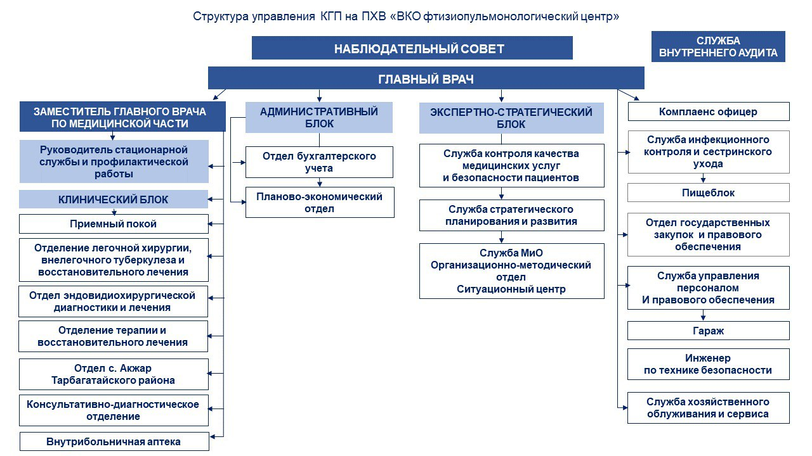

Аналитический_обзор_реализации_противотуберкулезных_мероприятий(PDF)
Отчет_о_финансово_хозяйственной_деятельности_ВК_ОФПЦ_за_2022_год(PDF)
Медицинская деятельность(PDF)
справка_о_гос_регистрации (PDF)
текст_изменения_в_Устав_ОФПЦ_от_03_04_2023г. (PDF)
Устав (PDF)